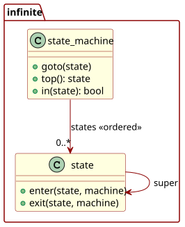
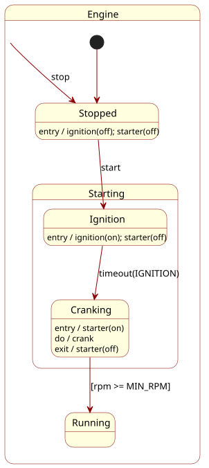

|
infinite_state_machine 1.0.0
Infinite State Machine Library
|
See also original blog post.
The following presents a hierarchical (nested) state machine implementation in C.

The concept applies a separation of concerns. The ‘machine’ and the ‘topology’ of its states occupy distinct yet interrelated aspects. The machine is a run-time entity that manages state transitions, while the topology defines the structural relationships between states. One is dynamic, the other is ordinarily static and pre-defined. Transitions and actions applied to the machine serve as operational mechanisms that manipulate the machine by walking the topology, triggering actions along the way.
Why infinite? “Infinite” refers to the absence of intrinsic compile-time nesting limits aside from memory or configured maximum depth in the C variant. It also implies that the system can handle an unbounded number of states and transitions, making it highly flexible and adaptable. The design also supports unbounded state topologies. Such can be flat or hierarchical, allowing for more complex state relationships. Additionally, the state machine can manage an unbounded number of active states simultaneously, allowing for concurrent state management with overlapping topologies as needed.
“Topology” here refers to the arrangement and organisation of states within the state machine. This can include hierarchical relationships, where states are nested within one another, for more complex arrangements that offer greater flexibility and adaptability—states within states ad aeternum.
Finally, the term “infinite” acts as a play on words, suggesting limitless possibilities versus finite constraints.
Think of C as the lingua Franca of computing. If you can express it in C, you can express it anywhere.
Use simple language elements: integers, structures, arrays and pointers. This makes it suitable for deeply embedded systems with limited resources, and it is also helpful in designing a portable framework. C constructs typically have their analogues in other languages, making it easier to translate ideas across different platforms.
Translating the design to C gives the following data structures:
The maximum depth defaults to 7, unless it has already been defined before the inclusion point of the header. Why 7? There is a method to the choice of a maximum depth of 7. Pointers and integers are 32 bits wide on a 32-bit machine. Seven pointers and one integer occupy eight words, or 32 bytes on a typical microcontroller. If a single machine requires more than seven nesting levels, it is generally better to refactor the design to reduce complexity.
| Function | Description |
|---|---|
void infinite_state_machine_init(machine) | Clear machine (depth=0, state slots NULL) |
void infinite_state_machine_goto(machine, state) | LCA-optimised transition to state (may be NULL: no-op) |
void infinite_state_machine_jump(machine, state) | Rebuild the stack from scratch, from root to state, ignoring callbacks |
int infinite_state_machine_in(machine, state) | 1 if active; 0 if not; negative -EINVAL on invalid arguments |
struct infinite_state *infinite_state_machine_top(machine) | Current innermost state or NULL |
struct infinite_state **infinite_state_topology(state, depth, vec) | Helper producing forward topology (outer to inner) |
LCA stands for “least common ancestor.” It is an optimisation technique used to improve the efficiency of state transitions within the state machine. By identifying the least common ancestor of the current state and the target state, the state machine can skip unnecessary intermediate states, resulting in faster transitions and reduced overhead.
LCA improves:
The core “goto” operation applies the optimisation, as follows.
The implementation uses a little trick. By leveraging the concept of a “jump” state machine, the “go” operator can effectively manage state transitions without the overhead of maintaining a whole stack of states. This enables more efficient transitions, particularly in scenarios with complex state hierarchies. The jump state machine serves as a lightweight alternative, allowing for quick adjustments to the state without the need for extensive bookkeeping.
The following example models a simple engine with the states: stopped, starting, igniting, cranking, and running. It demonstrates the use of the infinite state machine to manage the engine’s state transitions.
The engine starts in the stopped state. When the start function is called, it transitions to the starting state, which then enters the igniting state. The engine cycles through the igniting and cranking states before reaching the running state. The stop function can be called at any time to transition back to the stopped state.
Igniting and cranking exist as sub-states of “starting.” The engine takes time to transition between these states, simulating the various phases of starting an engine: switch on the ignition for a moment, then crank the engine until it starts.

Implemented in C:
The example flow proceeds as follows:
The concept of a state machine is ubiquitous in computer science and engineering. Its principles can be applied across various domains, from embedded systems to high-level application design. The infinite state machine model presented here offers a lightweight but flexible and robust framework for managing complex state interactions, enabling developers to create more adaptable and maintainable stateful systems.
The C implementation is particularly well-suited for deeply embedded systems, where resources are limited, and efficiency is paramount. By leveraging simple data structures and core operations, this design can be easily adapted to a wide range of applications, making it a versatile tool in the developer’s arsenal. The risk for the developer lies in the potential complexity of managing state transitions and ensuring the correct behaviour of the state machine. As the system evolves, maintaining clarity and simplicity in the state management logic becomes crucial to avoid introducing bugs and inefficiencies.
Notably, the state machine apparatus itself has a state; call it an auxiliary state. But in this case, the additional state is elementary: just a single topology vector representing a ‘cursor’ within the state hierarchy. The topology of the ‘machine’ and the machine itself exist separately, allowing for a clean separation of concerns and easier management of state transitions. It also means that the machine abstraction can be modelled as a private property, or properties in the case of multiple parallel machines, all belonging to the enclosing concept as a whole and not as part of an inheritance framework. The enclosing design can thus fully encapsulate the state machine’s behaviour and interactions, providing a more robust framework for building complex systems.
“Divide et impera, ad aeternum regnat.”